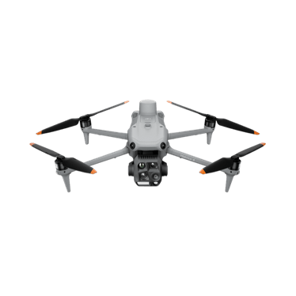
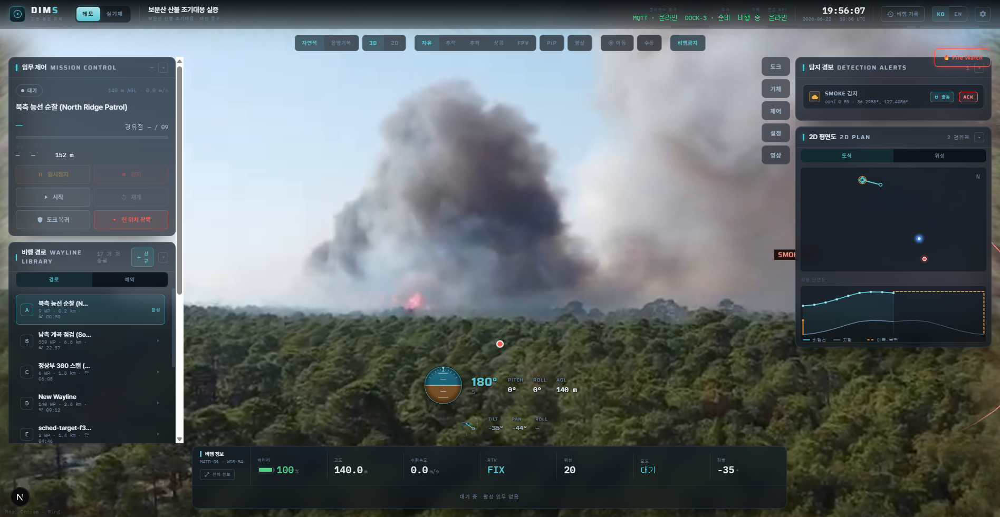

Matrice 4TD (M4TD)
If Dock 3 is the rooftop garage, the Matrice 4TD is the car that lives in it. It’s the actual drone DIMS flies — the thing with the cameras, the thermal sensor, and the laser. This chapter is all about that aircraft.
What it is, in one breath
The Matrice 4TD is DJI’s dock-paired enterprise inspection drone — part of the Matrice 4D aircraft family. The name decodes cleanly once you know the pattern:
So M4TD = the thermal-camera, dock-living member of the Matrice 4 series. It is built to sleep inside Dock 3, launch on a schedule, fly an inspection route entirely on its own, and land itself back on the charging pad — with no pilot standing in a field. It carries a multi-camera gimbal (wide + zoom + thermal) and a laser rangefinder, and it is the aircraft every flight you see in the DIMS console actually corresponds to.

Think of a smartphone with three rear lenses — an ultra-wide, a normal, and a long zoom — plus a thermal camera and a laser tape-measure, all bolted onto a flying robot that can hover dead still in wind and steer those lenses at any target. That’s the M4TD’s job: be a very smart camera that flies itself.
DJI publishes detailed specs for the Matrice 4 series. The M4TD is the thermal/dock variant, so the figures here are the 4-series numbers (specifically the 4T-class camera package). Treat them as the right ballpark for our aircraft, and always defer to DJI’s official site for an exact M4TD datasheet.
The flight specs that matter
Two of these matter a lot for inspection work. ~49 minutes of endurance is enough to fly a real route, study a structure, and come home with margin — and because the drone recharges in the dock, DIMS can run mission after mission unattended. 12 m/s wind resistance (about 43 km/h) means it can still do its job on a breezy day at Bomunsan, not only in perfect calm.
How it knows exactly where it is
Two systems keep the M4TD safe and precise:
- Omnidirectional obstacle sensing — binocular (stereo) vision looking in all directions, so the drone can see branches, wires, and walls and avoid them. Essential when it’s flying close to a tower crane or through a forest with nobody steering.
- RTK positioning — a satellite-positioning upgrade that pins the drone’s location to roughly 1 cm + 1 ppm horizontally, versus the metres of error a normal phone GPS gives you. Centimetre accuracy is what makes a repeatable, automated inspection possible: fly the exact same path every week and compare.
The cameras — one gimbal, four ways to look
The whole point of the M4TD is its payload: the sensor package on the gimbal. It bundles three visible-light cameras at different zoom levels plus an infrared (thermal) camera, so one aircraft can do many inspection jobs.
| Camera | Sensor | Field of view | Best for |
|---|---|---|---|
| Wide | 1/1.3" CMOS, 48 MP, f/1.7 | 24 mm equiv. | Situational overview — see the whole scene |
| Medium-tele | 1/1.3" CMOS, 48 MP | 70 mm equiv. | A closer look without flying nearer |
| Tele (zoom) | 1/1.5" CMOS, 48 MP | 168 mm equiv. | Reading a crack or bolt from a safe distance |
| Thermal (IR) | 640×512, 12 µm, ±2 °C | infrared | Heat — fire, overheating equipment, hotspots |
Why so many lenses? Because different inspections need different eyes:
- Wide gives the operator context — where is the drone, what’s around it.
- Tele zoom lets the drone read fine detail (a hairline crack, a loose bolt) from far away, so it never has to fly dangerously close.
- Thermal sees heat instead of light. A smouldering fire, an overheating motor, or warm machinery glows brightly even in darkness or smoke. For the forest-fire project this is gold: smoke might hide a fire from the colour camera, but the heat still shows up in the thermal image.
DIMS doesn’t pick one camera — it runs AI on the visible feed and can use thermal to confirm. A colour camera might spot smoke; the thermal camera confirms there’s real heat behind it. Two independent signals = far fewer false alarms.
The gimbal — how the camera aims
All those lenses sit on a 3-axis stabilised gimbal. “3-axis stabilised” means motors actively cancel the drone’s shaking and tilting on all three rotation axes, so the footage stays glass-smooth even as the aircraft bobs in the wind. Crucially, the gimbal is also steerable: DIMS can command its yaw (turn left/right) and pitch (tilt up/down) to point the cameras anywhere — independently of where the drone’s nose is facing.
That gimbal aim is exactly what you see in this real DIMS screenshot: the drone has detected a target and is auto-slewing the gimbal to lock onto it.

The laser rangefinder — the secret weapon
The M4TD carries a laser rangefinder: a laser that measures the exact distance to whatever the camera is pointed at — range up to 1800 m, accuracy ±0.2 m. This sounds minor but it’s one of the most important sensors for DIMS.
Here’s why it matters. To turn “I see a fire in the video” into “the fire is at this latitude/longitude,” DIMS needs to know how far away the thing is. Normally we estimate that by raycasting — shooting an imaginary line from the camera onto a 3D terrain model and seeing where it hits (covered in chapter 06 and chapter 15). The laser gives us that distance directly and precisely: aim the camera at the target, fire the laser, read the exact range. Combine the drone’s position, its gimbal angles, and that laser distance, and you get a direct geolocation of the fire or defect — no terrain-model guesswork needed.
Camera angle + laser distance + drone position = a real-world coordinate. The laser rangefinder turns the M4TD from “a drone that films things” into “a drone that can tell you precisely where the thing is.” That’s the bridge from pixels to a pin on the map.
Getting the picture home: the radio link
None of this is useful if the operator can’t see it live. The M4TD uses DJI O4 Enterprise transmission to stream control commands and video between the aircraft and the dock/ground.
~130 ms latency means the live feed is close to real-time — when you nudge the gimbal in the console, the picture responds almost instantly. (Range figures differ by region because of radio regulations: FCC is the US standard, CE the European one.)
How it works with the dock — the daily cycle
The M4TD and Dock 3 are designed as one system. A typical autonomous cycle looks like this:
- The dock opens; the M4TD takes off from its charging pad.
- It flies the planned route, steering the gimbal and running cameras at each point of interest.
- It streams live video and telemetry back the whole time.
- When the job’s done (or the battery runs low), it returns to the dock, lands on the pad, and recharges — ready for the next mission, no human required.
For everything the dock does — weatherproofing, charging, the connection to our cloud — see chapter 07.
What DIMS reads from the drone
While the M4TD flies, DIMS continuously receives two streams from it. Both flow through DJI’s Cloud API and into the console you’ll work with daily.
📊 Telemetry (OSD)
A constant trickle of numbers: GPS position, altitude, battery %, speed, heading, and the live gimbal yaw/pitch angles. DIMS uses these to draw the drone on the 3D twin and to do the raycast math.
🎥 Live video
The camera feed itself, restreamed so the operator (and the AI) can watch in the browser. This is what the YOLO models analyse frame-by-frame to find fire, smoke, and defects.
Those gimbal angles in the telemetry aren’t just for show — they’re an input to the geolocation math. Knowing exactly which way the camera was pointing (yaw + pitch) is half of turning a detection into a coordinate. See chapter 10 for a deeper dive on the sensors, and chapter 06 for how telemetry feeds the detection loop.
Want the deep version? Why a dock-specific “D” model at all?
A normal enterprise drone is built around a human pilot with a controller. A dock variant flips that: there’s no controller and no pilot on site, so the aircraft must be able to be fully commanded over the network, self-test before flight, land itself precisely back on a small pad, and tolerate sitting in a box through heat, cold, and rain. The “D” version bundles the firmware and hardware tweaks (precise pad landing, dock handshake, remote health checks) that make autonomous, pilotless operation reliable. That’s why DIMS can run it as a true “fly-by-itself” system rather than a remote-controlled toy.
“The Matrice 4TD is the dock-paired enterprise drone DIMS flies — ‘T’ for thermal, ‘D’ for dock. It flies ~49 minutes, resists 12 m/s wind, and positions itself to ~1 cm with RTK. Its steerable 3-axis gimbal carries wide, zoom, and thermal cameras plus a 1800 m laser rangefinder — and that laser is key, because camera angle + laser distance + drone position gives a fire or defect a real coordinate. It launches from and recharges in Dock 3, and DIMS reads its telemetry and live video to drive the console and run AI.”
Next we’ll look at the other aircraft in CNS’s world and how they compare.
Specs, user manual & firmware: Matrice 4 Series specs · downloads. Full link list in chapter 20.